2.3 Exercises
Conceptual
1. For each of parts (a) through (d), indicate whether we would generally expect the performance of a flexible statistical learning method to be better or worse than an inflexible method. Justify your answer.
(a) The sample size n is extremely large, and the number of predictors p is small.
A flexible model can take advantage of the large number of observations to make a detailed model.
(b) The number of predictors p is extremely large, and the number of observations n is small.
I’d apply Principal Component Analysis to drive p well under n, and then an inflexible, parametric method like Ordinary Least Squares could provide a model with a reasonable test set performance.
(c) The relationship between the predictors and response is highly non-linear.
A flexible model could better capture the non-linearity.
(d) The variance of the error terms, i.e. σ2 = Var(ϵ), is extremely high.
An inflexible, parametric method would provide a standardized, average slice across the domain.
2. Explain whether each scenario is a classification or regression problem, and indicate whether we are most interested in inference or prediction. Finally, provide n and p.
(a) We collect a set of data on the top 500 firms in the US. For each firm we record profit, number of employees, industry and the CEO salary. We are interested in understanding which factors affect CEO salary.
The problem is a regression, and we are interested in inferring the component factors. N is 500, and p is 3.
(b) We are considering launching a new product and wish to know whether it will be a success or a failure. We collect data on 20 similar products that were previously launched. For each product we have recorded whether it was a success or failure, price charged for the product, marketing budget, competition price, and ten other variables.
The problem is a binary classification prediction. The N is 20, p is 13.
(c) We are interested in predicting the % change in the USD/Euro exchange rate in relation to the weekly changes in the world stock markets. Hence we collect weekly data for all of 2012. For each week we record the % change in the USD/Euro, the % change in the US market, the % change in the British market, and the % change in the German market.
The % change problem is a regression prediction with a p of 4 and an N of 52.
3. We now revisit the bias-variance decomposition.
(a) Provide a sketch of typical (squared) bias, variance, training error, test error, and Bayes (or irreducible) error curves, on a single plot, as we go from less flexible statistical learning methods towards more flexible approaches. The x-axis should represent the amount of flexibility in the method, and the y-axis should represent the values for each curve. There should be five curves. Make sure to label each one.

X-axis: increasing flexibility and model complexity
Y-axis: increasing Error, Variance, and Bias
Blue: Bias
Brown: Variance
Yellow: Training set MSE
Green: Testing set MSE
Black: Irreducibile error (Bayes)
(b) Explain why each of the five curves has the shape displayed in part (a).
Yellow: As models become more flexible and complex, the training error is reduced, but with diminishing benefit.
Green: We often observe a U-shaped error in the holdout training error. This is a combination of the Bias error above the least flexible model and the Variance error from over-fitting the most flexible models and the irreducible error component.
Blue: The bias error component, as observed in the test result
Brown: The variance error component, as observed in the test result
Black: The irreducible error component, as observed in the test result
4. You will now think of some real-life applications for statistical learning.
(a) Describe three real-life applications in which classification might be useful. Describe the response, as well as the predictors. Is the goal of each application inference or prediction? Explain your answer.
Infer the causes of expedited freight for a component part. The independent predictors would include country of origin, shipping method, promised lead time, and schedule changes for a year of deliveries.
Predict customer churn for a learning labs subscription education program. The independent predictors would include monthly payment history, course topics, and web site visits.
Predict the alphabetic letter of samples of handwriting. The independent predictors would be the pixels of many labeled images.
(b) Describe three real-life applications in which regression might be useful. Describe the response, as well as the predictors. Is the goal of each application inference or prediction? Explain your answer.
Predict the survival rate of a vehicle component part in use by customers. The response is the proportion of parts still in service, censored. The independent predictors would include engine hours accumulated, region, machine chassis, and type of farm.
Infer the characteristics of bottles of wine that influence price. The independent predictors would include the vintage year, the type of grape, the region, the color of the bottle, and the length of the story on the label.
Predict the number of sales conversions per visitor for a web portal store front, given the catalog of products available, the layout parameters of the web site, the colors, and dimensions of the shopping experience.
(c) Describe three real-life applications in which cluster analysis might be useful.
Given demographic data on millions of customers and what they buy, build five persona’s for describing the current customer base to a company investor.
Given IoT operating data from agricultural equipment, build three persona’s for characterizing duty cycles of a fleet.
Given employee communications transactional data, build three persona’s for better tailoring targeted leadership training.
5. What are the advantages and disadvantages of a very flexible (versus a less flexible) approach for regression or classification? Under what circumstances might a more flexible approach be preferred to a less flexible approach? When might a less flexible approach be preferred?
The very flexible GBMs and Neural Nets require more data, and are often both less interpretable and explainable. Banks and highly regulated entities prefer simple linear models and decision trees so they can explain their management policies in simple terms.
6. Describe the differences between a parametric and a non-parametric statistical learning approach. What are the advantages of a parametric approach to regression or classification (as opposed to a nonparametric approach)? What are its disadvantages?
In any parametric approach we start with an assumption about the functional form and then work towards fitting the data to the closest version of that functional form. On advantage is in explainability, and another is that less data is required to build a useful model. A disadvantage is that the model might never achieve the lowest error rate.
7. The table below provides a training data set containing six observations, three predictors, and one qualitative response variable.
| Obs. | X1 | X2 | X3 | Y |
|---|---|---|---|---|
| 1 | 0 | 3 | 0 | Red |
| 2 | 2 | 0 | 0 | Red |
| 3 | 0 | 1 | 3 | Red |
| 4 | 0 | 1 | 2 | Green |
| 5 | −1 | 0 | 1 | Green |
| 6 | 1 | 1 | 1 | Red |
Suppose we wish to use this data set to make a prediction for Y when X1 = X2 = X3 = 0 using K-nearest neighbors.
(a) Compute the Euclidean distance between each observation and the test point, X1 = X2 = X3 = 0.
Red: sqrt((0-0)^2 + (0-3)^2 + (0-0)^2 )= sqrt(9) = 3
Red: sqrt((0-2)^2 + (0-0)^2 + (0-0)^2 )= sqrt(4) = 2
Red: sqrt((0-0)^2 + (0-1)^2 + (0-3)^2 )= sqrt(10) = 3.162278
Green: sqrt((0-0)^2 + (0-1)^2 + (0-2)^2 )= sqrt(5)= 2.236068
Green: sqrt((0+1)^2 + (0-0)^2 + (0-1)^2 )= sqrt(2) =1.414214
Red: sqrt((0-1)^2 + (0-1)^2 + (0-1)^2 )= sqrt(3)=1.732051
(b) What is our prediction with K = 1? Why?
For a test set X1=X2=X3=0, this is closest to Green which is at a distance sqrt(2). Therefore the prediction is Green.
(c) What is our prediction with K = 3? Why?
For a test set X1=X2=X3=0, this is closest to Red (Obs 2), Green(Obs 5) and Red(Obs 6). Thus the prediction will be Red.
(d) If the Bayes decision boundary in this problem is highly nonlinear, then would we expect the best value for K to be large or small? Why?
Small k values yield a model with lots of detailed curves in the boundary, and likely the lowest irreducible error.
Applied
8. This exercise relates to the College data set, which can be found in the file College.csv on the book website.
(a) Use the read.csv() function to read the data into R. Call the loaded data college. Make sure that you have the directory set to the correct location for the data.
(b) Look at the data using the View() function. You should notice that the first column is just the name of each university. We don’t really want R to treat this as data. However, it may be handy to have these names for later. Try the following commands:
(c) i. Use the summary() function to produce a numerical summary of the variables in the data set.
college <- read_csv("https://www.statlearning.com/s/College.csv",
show_col_types = FALSE) %>%
rename(college = `...1`) ## New names:
## * `` -> ...1## college Private Apps Accept
## Length:777 Length:777 Min. : 81 Min. : 72
## Class :character Class :character 1st Qu.: 776 1st Qu.: 604
## Mode :character Mode :character Median : 1558 Median : 1110
## Mean : 3002 Mean : 2019
## 3rd Qu.: 3624 3rd Qu.: 2424
## Max. :48094 Max. :26330
## Enroll Top10perc Top25perc F.Undergrad
## Min. : 35 Min. : 1.00 Min. : 9.0 Min. : 139
## 1st Qu.: 242 1st Qu.:15.00 1st Qu.: 41.0 1st Qu.: 992
## Median : 434 Median :23.00 Median : 54.0 Median : 1707
## Mean : 780 Mean :27.56 Mean : 55.8 Mean : 3700
## 3rd Qu.: 902 3rd Qu.:35.00 3rd Qu.: 69.0 3rd Qu.: 4005
## Max. :6392 Max. :96.00 Max. :100.0 Max. :31643
## P.Undergrad Outstate Room.Board Books
## Min. : 1.0 Min. : 2340 Min. :1780 Min. : 96.0
## 1st Qu.: 95.0 1st Qu.: 7320 1st Qu.:3597 1st Qu.: 470.0
## Median : 353.0 Median : 9990 Median :4200 Median : 500.0
## Mean : 855.3 Mean :10441 Mean :4358 Mean : 549.4
## 3rd Qu.: 967.0 3rd Qu.:12925 3rd Qu.:5050 3rd Qu.: 600.0
## Max. :21836.0 Max. :21700 Max. :8124 Max. :2340.0
## Personal PhD Terminal S.F.Ratio
## Min. : 250 Min. : 8.00 Min. : 24.0 Min. : 2.50
## 1st Qu.: 850 1st Qu.: 62.00 1st Qu.: 71.0 1st Qu.:11.50
## Median :1200 Median : 75.00 Median : 82.0 Median :13.60
## Mean :1341 Mean : 72.66 Mean : 79.7 Mean :14.09
## 3rd Qu.:1700 3rd Qu.: 85.00 3rd Qu.: 92.0 3rd Qu.:16.50
## Max. :6800 Max. :103.00 Max. :100.0 Max. :39.80
## perc.alumni Expend Grad.Rate
## Min. : 0.00 Min. : 3186 Min. : 10.00
## 1st Qu.:13.00 1st Qu.: 6751 1st Qu.: 53.00
## Median :21.00 Median : 8377 Median : 65.00
## Mean :22.74 Mean : 9660 Mean : 65.46
## 3rd Qu.:31.00 3rd Qu.:10830 3rd Qu.: 78.00
## Max. :64.00 Max. :56233 Max. :118.00ii. Use the pairs() function to produce a scatterplot matrix of the first ten columns or variables of the data. Recall that you can reference the first ten columns of a matrix A using A[,1:10].
# pairs(college[,3:12])
GGally::ggpairs(college[,2:11],
mapping = aes(color = Private),
progress = FALSE,
lower = list(combo = GGally::wrap("facethist",
bins = 40))) +
theme_bw() +
theme(panel.grid = element_blank()) +
labs(caption = "Source: ISLR2::College | Ten numeric features") ## Registered S3 method overwritten by 'GGally':
## method from
## +.gg ggplot2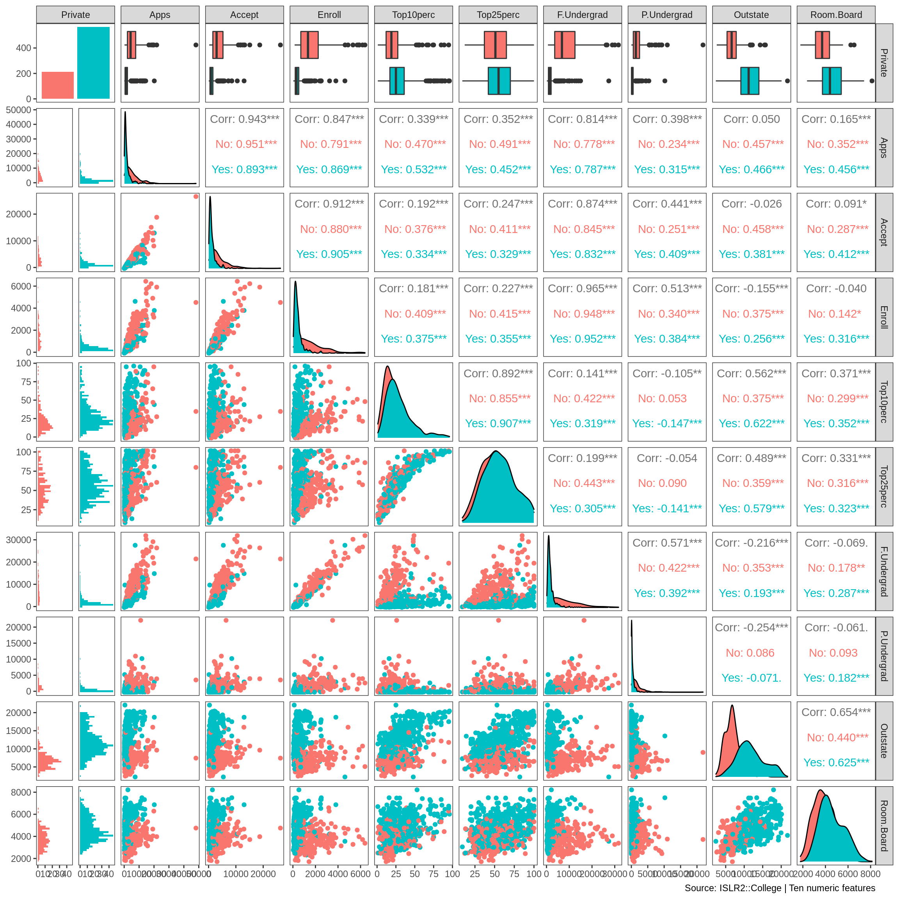
iii. Use the plot() function to produce side-by-side boxplots of Outstate versus Private.
# plot( college$Private, college$Outstate )
college %>%
ggplot(aes(Private, Outstate)) +
geom_boxplot() +
theme_bw() +
theme(panel.grid = element_blank()) +
labs(caption = "Source: ISLR2::College") 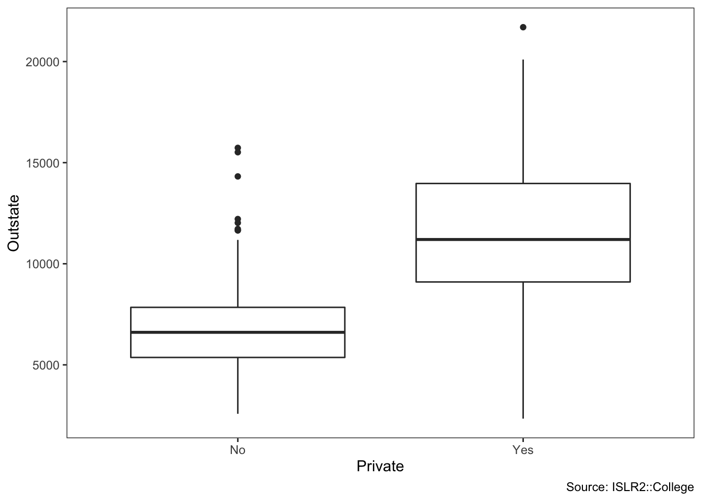
iv. Create a new qualitative variable, called Elite, by binning
the Top10perc variable. We are going to divide universities into two groups based on whether or not the proportion of students coming from the top 10 % of their high school
classes exceeds 50 %.
Use the summary() function to see how many elite universities there are.
# Elite <- rep("No", nrow(college))
# Elite[college$Top10perc > 50] <- " Yes "
# Elite <- as.factor(Elite)
# college <- data.frame(college , Elite)
college <- college %>%
mutate(Elite = as_factor(if_else(Top10perc > 50, "Yes", "No")))
summary(college$Elite)## No Yes
## 699 78Now use the plot() function to produce side-by-side boxplots of Outstate versus Elite.
#plot( college$Elite, college$Outstate )
college %>%
ggplot(aes(Elite, Outstate)) +
geom_boxplot() +
theme_bw() +
theme(panel.grid = element_blank()) +
labs(caption = "Source: ISLR2::College") 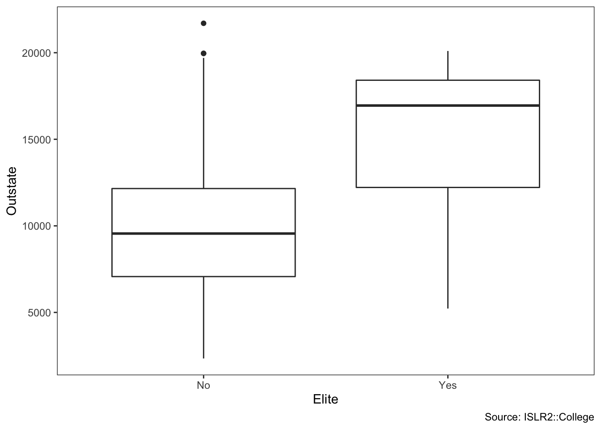
v. Use the hist() function to produce some histograms with differing numbers of bins for a few of the quantitative variables. You may find the command par(mfrow = c(2, 2)) useful: it will divide the print window into four regions so that four plots can be made simultaneously. Modifying the arguments to this function will divide the screen in other ways.
college %>%
ggplot(aes(Enroll, fill = Private)) +
geom_histogram(bins = 40) +
theme_bw() +
theme(panel.grid = element_blank()) +
labs(caption = "Source: ISLR2::College") 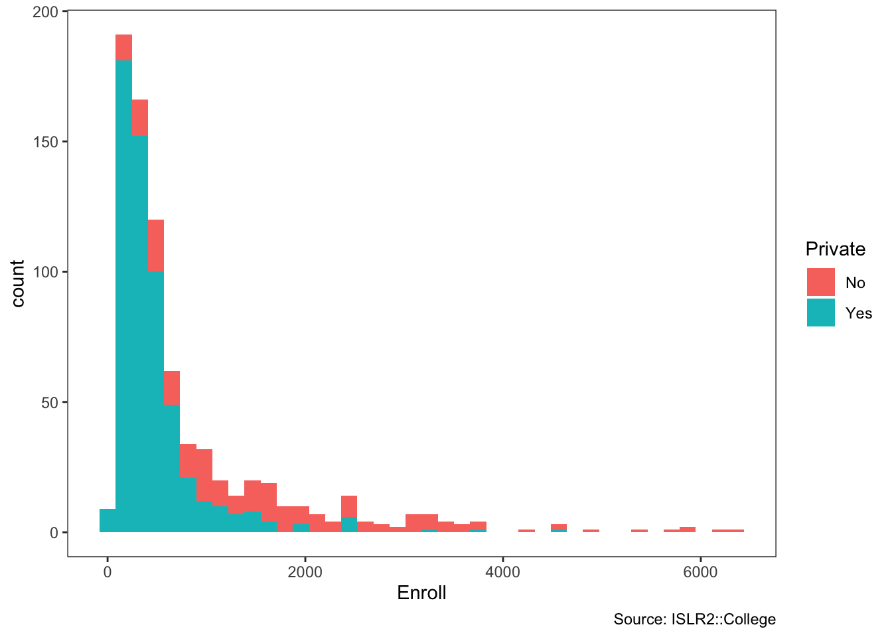
vi. Continue exploring the data, and provide a brief summary of what you discover.
GGally::ggpairs(bind_cols(college[,2],college[,12:18]),
mapping = aes(color = Private),
progress = FALSE,
lower = list(combo = GGally::wrap("facethist",
bins = 40))) +
theme_bw() +
theme(panel.grid = element_blank()) +
labs(caption = "Source: ISLR2::College | Ten numeric features") 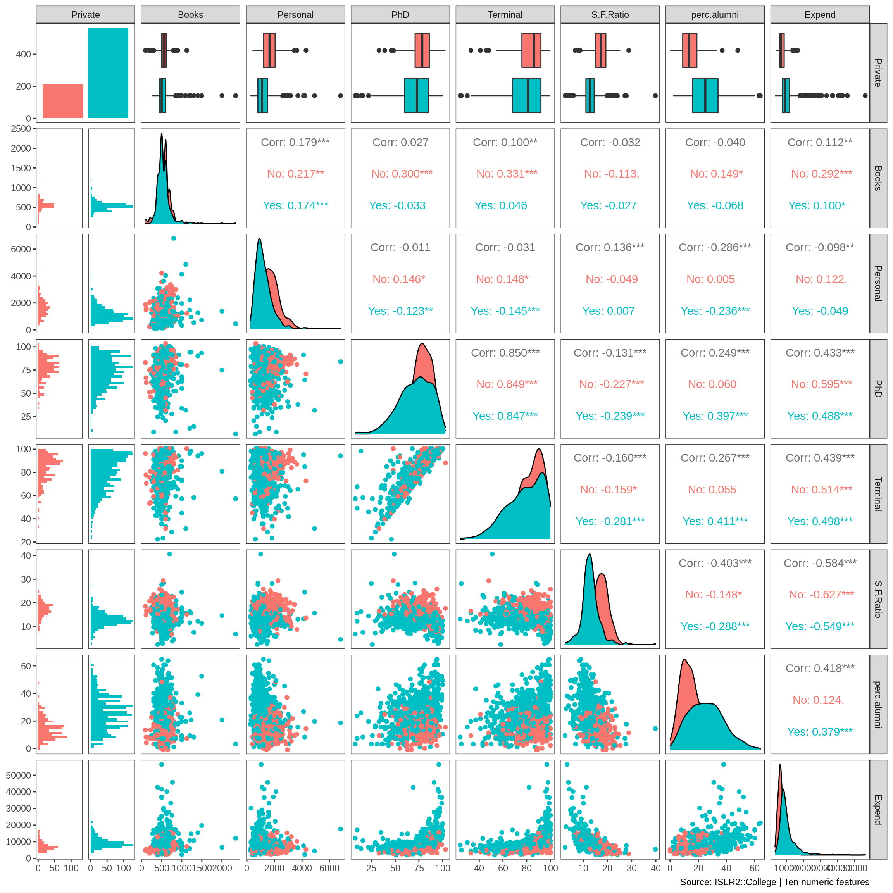
The public institutions in this dataset enroll more undergraduates, while the private ones have more pursuing terminal degrees in their fields.
9. This exercise involves the Auto data set studied in the lab. Make sure that the missing values have been removed from the data. (a) Which of the predictors are quantitative, and which are qualitative?
| Name | Auto |
| Number of rows | 392 |
| Number of columns | 9 |
| _______________________ | |
| Column type frequency: | |
| factor | 1 |
| numeric | 8 |
| ________________________ | |
| Group variables | None |
Variable type: factor
| skim_variable | n_missing | complete_rate | ordered | n_unique | top_counts |
|---|---|---|---|---|---|
| name | 0 | 1 | FALSE | 301 | amc: 5, for: 5, toy: 5, amc: 4 |
Variable type: numeric
| skim_variable | n_missing | complete_rate | mean | sd | p0 | p25 | p50 | p75 | p100 | hist |
|---|---|---|---|---|---|---|---|---|---|---|
| mpg | 0 | 1 | 23.45 | 7.81 | 9 | 17.00 | 22.75 | 29.00 | 46.6 | ▆▇▆▃▁ |
| cylinders | 0 | 1 | 5.47 | 1.71 | 3 | 4.00 | 4.00 | 8.00 | 8.0 | ▇▁▃▁▅ |
| displacement | 0 | 1 | 194.41 | 104.64 | 68 | 105.00 | 151.00 | 275.75 | 455.0 | ▇▂▂▃▁ |
| horsepower | 0 | 1 | 104.47 | 38.49 | 46 | 75.00 | 93.50 | 126.00 | 230.0 | ▆▇▃▁▁ |
| weight | 0 | 1 | 2977.58 | 849.40 | 1613 | 2225.25 | 2803.50 | 3614.75 | 5140.0 | ▇▇▅▅▂ |
| acceleration | 0 | 1 | 15.54 | 2.76 | 8 | 13.78 | 15.50 | 17.02 | 24.8 | ▁▆▇▂▁ |
| year | 0 | 1 | 75.98 | 3.68 | 70 | 73.00 | 76.00 | 79.00 | 82.0 | ▇▆▇▆▇ |
| origin | 0 | 1 | 1.58 | 0.81 | 1 | 1.00 | 1.00 | 2.00 | 3.0 | ▇▁▂▁▂ |
Quantitative: mpg, cylinders, displacement, horsepower, weight, acceleration, year, origin
Qualitative: name
(b) What is the range of each quantitative predictor? You can answer this using the range() function. range()
Auto %>%
select(where(is.numeric)) %>%
summarize(across(everything(), range)) %>%
mutate(level = c("min", "max")) %>%
pivot_longer(cols = -level,
names_to = "metric",
values_to = "value") %>%
pivot_wider(names_from = level,
values_from = value)## # A tibble: 8 × 3
## metric min max
## <chr> <dbl> <dbl>
## 1 mpg 9 46.6
## 2 cylinders 3 8
## 3 displacement 68 455
## 4 horsepower 46 230
## 5 weight 1613 5140
## 6 acceleration 8 24.8
## 7 year 70 82
## 8 origin 1 3(c) What is the mean and standard deviation of each quantitative predictor?
Auto %>%
select(where(is.numeric)) %>%
summarize(across(everything(), mean, na.rm = TRUE)) %>% pivot_longer(everything(),
values_to = "mean")## # A tibble: 8 × 2
## name mean
## <chr> <dbl>
## 1 mpg 23.4
## 2 cylinders 5.47
## 3 displacement 194.
## 4 horsepower 104.
## 5 weight 2978.
## 6 acceleration 15.5
## 7 year 76.0
## 8 origin 1.58Auto %>%
select(where(is.numeric)) %>%
summarize(across(everything(), sd, na.rm = TRUE)) %>% pivot_longer(everything(),
values_to = "sd")## # A tibble: 8 × 2
## name sd
## <chr> <dbl>
## 1 mpg 7.81
## 2 cylinders 1.71
## 3 displacement 105.
## 4 horsepower 38.5
## 5 weight 849.
## 6 acceleration 2.76
## 7 year 3.68
## 8 origin 0.806(d) Now remove the 10th through 85th observations. What is the range, mean, and standard deviation of each predictor in the subset of the data that remains?
Auto[-c(10:85), ] %>%
select(where(is.numeric)) %>%
summarize(across(everything(),
range, na.rm = TRUE)) %>%
mutate(level = c("min", "max")) %>%
pivot_longer(cols = -level,
names_to = "metric",
values_to = "value") %>%
pivot_wider(names_from = level,
values_from = value)## # A tibble: 8 × 3
## metric min max
## <chr> <dbl> <dbl>
## 1 mpg 11 46.6
## 2 cylinders 3 8
## 3 displacement 68 455
## 4 horsepower 46 230
## 5 weight 1649 4997
## 6 acceleration 8.5 24.8
## 7 year 70 82
## 8 origin 1 3Auto[-c(10:85), ] %>%
select(where(is.numeric)) %>%
summarize(across(everything(), mean, na.rm = TRUE)) %>%
pivot_longer(everything(),
values_to = "mean")## # A tibble: 8 × 2
## name mean
## <chr> <dbl>
## 1 mpg 24.4
## 2 cylinders 5.37
## 3 displacement 187.
## 4 horsepower 101.
## 5 weight 2936.
## 6 acceleration 15.7
## 7 year 77.1
## 8 origin 1.60Auto[-c(10:85), ] %>%
select(where(is.numeric)) %>%
summarize(across(everything(), sd, na.rm = TRUE)) %>%
pivot_longer(everything(),
values_to = "sd")## # A tibble: 8 × 2
## name sd
## <chr> <dbl>
## 1 mpg 7.87
## 2 cylinders 1.65
## 3 displacement 99.7
## 4 horsepower 35.7
## 5 weight 811.
## 6 acceleration 2.69
## 7 year 3.11
## 8 origin 0.820(e) Using the full data set, investigate the predictors graphically, using scatterplots or other tools of your choice. Create some plots highlighting the relationships among the predictors. Comment on your findings.
GGally::ggpairs(select(Auto, -name),
progress = FALSE,
lower = list(combo = GGally::wrap("facethist",
bins = 40)))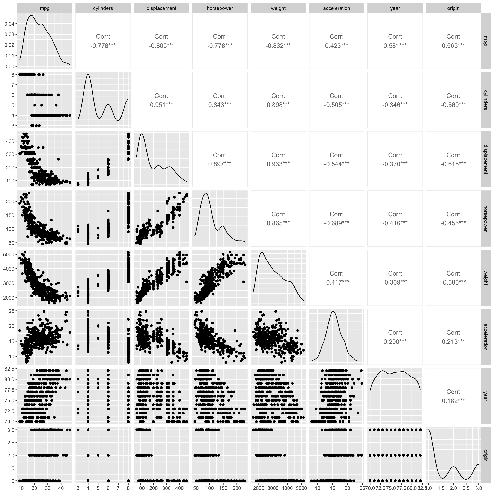
displacement appears to have a positive relationship with horsepower
mpg has a negative, nonlinear relationship with displacement
(f) Suppose that we wish to predict gas mileage (mpg) on the basis of the other variables. Do your plots suggest that any of the other variables might be useful in predicting mpg? Justify your answer.
Yes, a predictive model is certainly possible with this data set.
2.4 Exercises 57 10. This exercise involves the Boston housing data set. (a) To begin, load in the Boston data set. The Boston data set is part of the ISLR2 library.
How many rows are in this data set?
## [1] 506How many columns?
## [1] 13What do the rows and columns represent?
These are housing sale values medv and the characteristics of 506 suburbs of Boston.
(b) Make some pairwise scatterplots of the predictors (columns) in this data set. Describe your findings.
GGally::ggpairs(ISLR2::Boston,
progress = FALSE,
lower = list(combo = GGally::wrap("facethist",
bins = 40)))
medv is reduced with higher lstat
medv increases with rm
(c) Are any of the predictors associated with per capita crime rate? If so, explain the relationship.
Yes, rad highway access moderately at 0.626. Crime is highest at low rad, drops quickly, and then increase somewhat at high rad.
(d) Do any of the census tracts of Boston appear to have particularly high crime rates? Tax rates? Pupil-teacher ratios? Comment on the range of each predictor
## crim zn indus chas nox rm age dis rad tax ptratio lstat medv
## 1 88.9762 0 18.1 0 0.671 6.968 91.9 1.4165 24 666 20.2 17.21 10.4
## 2 73.5341 0 18.1 0 0.679 5.957 100.0 1.8026 24 666 20.2 20.62 8.8
## 3 67.9208 0 18.1 0 0.693 5.683 100.0 1.4254 24 666 20.2 22.98 5.0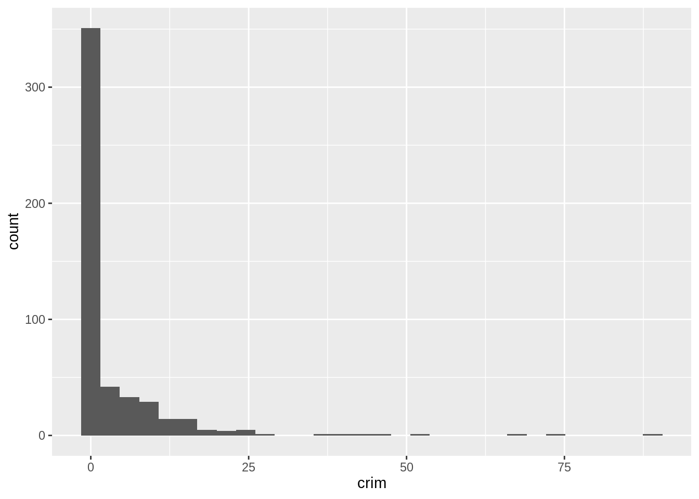
Yes, the median crime rate crim is very low, at only 0.257. This feature is heavily skewed right. The range runs from 0.00637 to 89.0.
## crim zn indus chas nox rm age dis rad tax ptratio lstat medv
## 1 0.15086 0 27.74 0 0.609 5.454 92.7 1.8209 4 711 20.1 18.06 15.2
## 2 0.18337 0 27.74 0 0.609 5.414 98.3 1.7554 4 711 20.1 23.97 7.0
## 3 0.20746 0 27.74 0 0.609 5.093 98.0 1.8226 4 711 20.1 29.68 8.1
## 4 0.10574 0 27.74 0 0.609 5.983 98.8 1.8681 4 711 20.1 18.07 13.6
## 5 0.11132 0 27.74 0 0.609 5.983 83.5 2.1099 4 711 20.1 13.35 20.1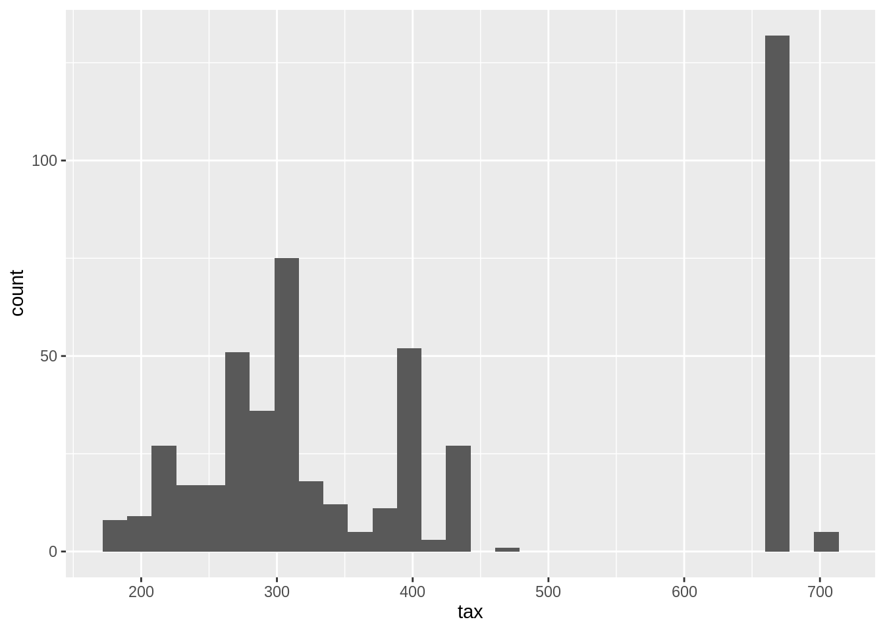
Yes, median full value tax rates range from 169k to 711k. The distribution across suburbs is also not even.
## crim zn indus chas nox rm age dis rad tax ptratio lstat medv
## 1 0.04011 80 1.52 0 0.404 7.287 34.1 7.309 2 329 12.6 4.08 33.3
## 2 0.04666 80 1.52 0 0.404 7.107 36.6 7.309 2 329 12.6 8.61 30.3
## 3 0.03768 80 1.52 0 0.404 7.274 38.3 7.309 2 329 12.6 6.62 34.6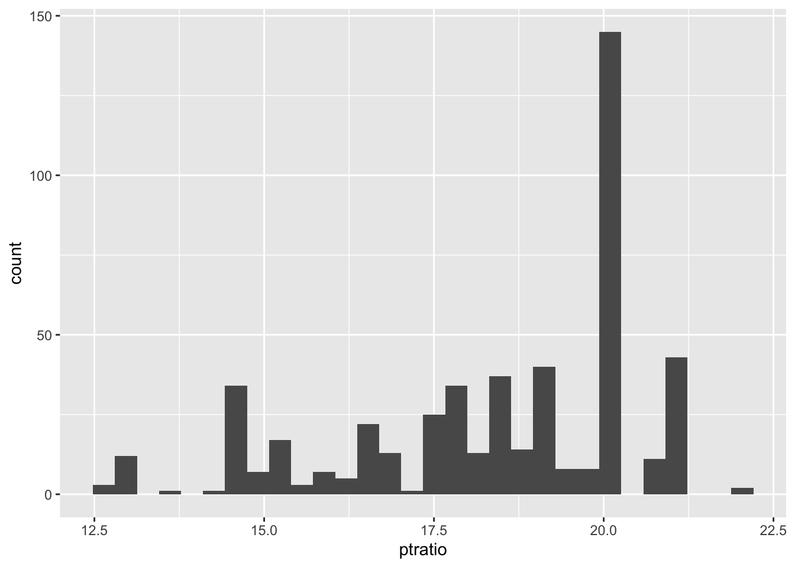
The ptratio is skewed left, with the bulk of the suburbs at the high end of the range from 2.16 to 38.
(e) How many of the census tracts in this data set bound the Charles river?
## chas == 1 n
## 1 FALSE 471
## 2 TRUE 3535 suburbs bound the Charles River
(f) What is the median pupil-teacher ratio among the towns in this data set?
## ptratio_median
## 1 19.05(g) Which census tract of Boston has lowest median value of owner occupied homes?
## .row medv
## 1 399 5
## 2 406 5Rows 399 and 406.
What are the values of the other predictors for that census tract, and how do those values compare to the overall ranges for those predictors? Comment on your findings.
ISLR2::Boston %>%
mutate(bottom_tracts =
if_else(medv == min(medv),
"Bottom",
NA_character_)) %>%
pivot_longer(cols = -c(bottom_tracts, medv)) %>%
ggplot(aes(value, medv, color = bottom_tracts)) +
geom_point() +
facet_wrap(vars(name),
scales = "free_x") +
theme_bw() +
theme(strip.placement = "outside",
panel.grid = element_blank(),
strip.background = element_blank()) +
labs(caption = "Source: ISLR2::Boston | Lowest Median Home Value Suburbs",
color = NULL)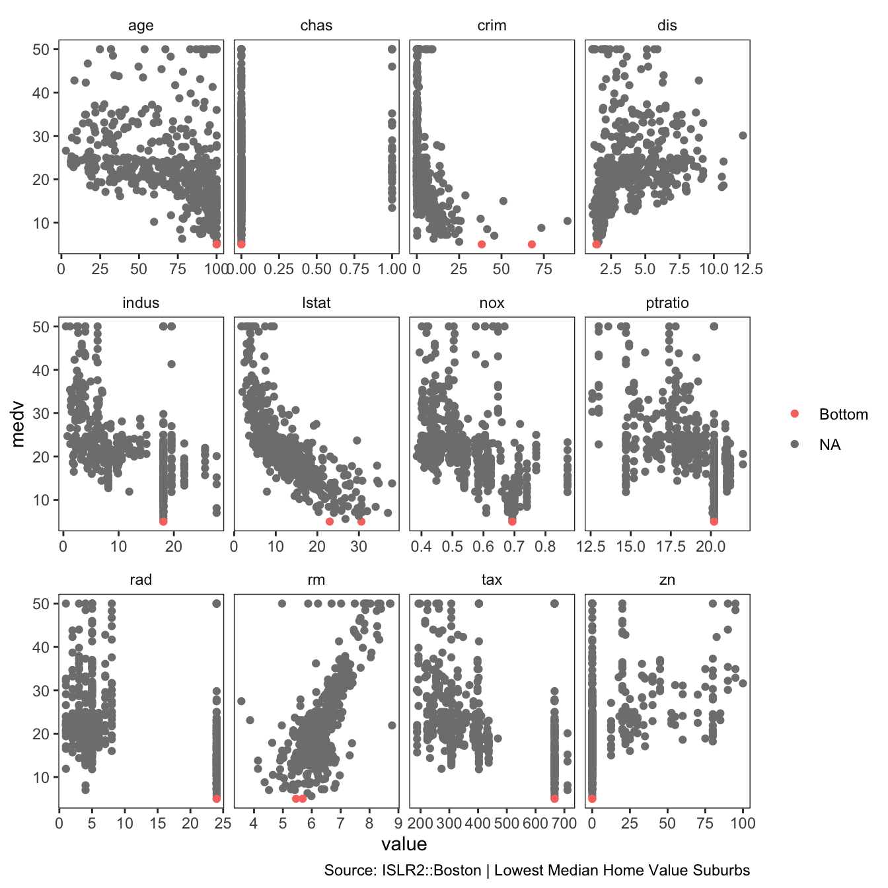
The lowest median value suburbs of Boston are the oldest, they have higher crime than most, they are close to empoyment centers, they are related to industry, they have high taxes, and a low zn proportion of large lots zoned.
(h) In this data set, how many of the census tracts average more than seven rooms per dwelling? More than eight rooms per dwelling? Comment on the census tracts that average more than eight rooms per dwelling.
ISLR2::Boston %>%
mutate(room_state = case_when(
rm > 8 ~ "eight_plus",
rm > 7 ~ "seven_to_eight",
TRUE ~ NA_character_
)) %>%
count(room_state)## room_state n
## 1 eight_plus 13
## 2 seven_to_eight 51
## 3 <NA> 442ISLR2::Boston %>%
mutate(room_state = case_when(
rm > 8 ~ "eight_plus",
rm > 7 ~ "seven_to_eight",
TRUE ~ NA_character_
)) %>%
pivot_longer(cols = -c(room_state, medv)) %>%
ggplot(aes(value, medv, color = room_state)) +
geom_point(shape = 21, alpha = 0.7) +
facet_wrap(vars(name),
scales = "free_x") +
theme_bw() +
theme(strip.placement = "outside",
panel.grid = element_blank(),
strip.background = element_blank()) +
labs(caption = "Source: ISLR2::Boston | More than 8 rooms per dwelling",
color = NULL)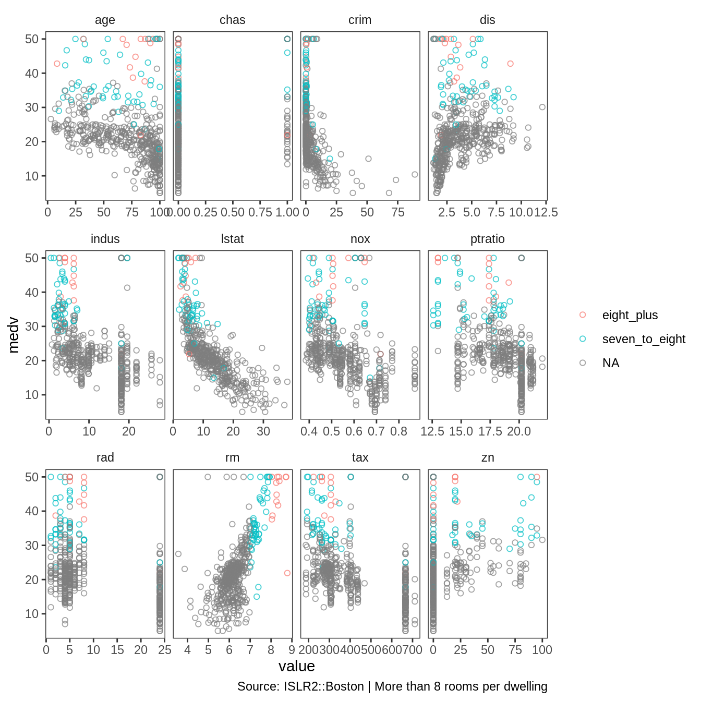
Again, the oldest homes have more than 8 rooms per dwelling. They have the lowest tax assessments and a low proportion of non-retail business acres per town.